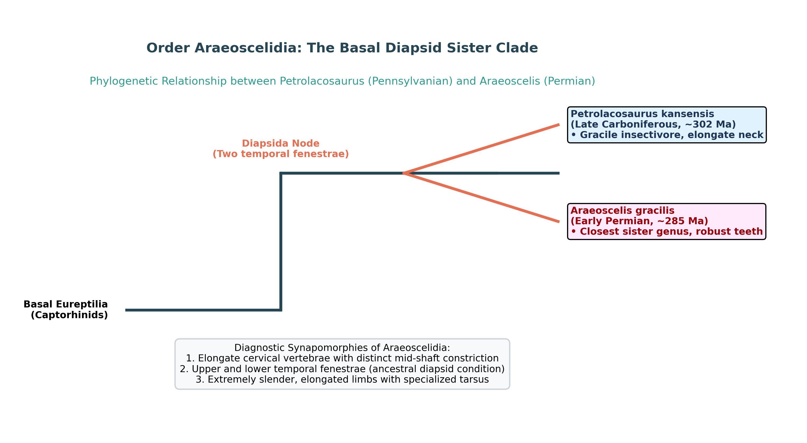

The amniote class Reptilia is divided into major evolutionary lineages based on the architecture of the temporal region of the skull. The clade Diapsida—which gave rise to lizards, snakes, sphenodontians, crocodilians, pterosaurs, dinosaurs, and birds—is defined by the presence of two temporal openings (fenestrae) on each side of the skull behind the orbit (a superior/upper temporal fenestra and an inferior/lower temporal fenestra):

While sharing a close phylogenetic sister-group relationship, Araeoscelis displays specialized dietary adaptations compared to the generalized insectivorous Petrolacosaurus:
| Amniote Skull Pattern | Number of Temporal Fenestrae | Bones Bounding the Openings | Representative Genera & Lineages |
|---|---|---|---|
| Anapsid | Zero (0); solid bony roof behind orbit. | Postorbital, squamosal, jugal (unperforated). | Hylonomus, Paleothyris (Captorhinids, Pareiasaurs). |
| Synapsid | One (1) lower temporal opening. | Bounded above by Postorbital-Squamosal bar. | Pelycosaurs (Dimetrodon), Therapsids $\to$ Mammals. |
| Diapsid (Target) | Two (2); upper and lower openings. | Upper (parietal-postorbital); Lower (postorbital-jugal-squamosal). | Petrolacosaurus, Araeoscelis, Lizards, Dinosaurs, Birds. |
| Euryapsid | One (1) upper temporal opening (derived). | Bounded below by Postorbital-Squamosal bar. | Marine reptiles (Ichthyosaurs, Plesiosaurs). |
Detailed Paleontological Forensic Analysis:
Detailed Refutation:
Detailed Refutation:
Detailed Refutation:
| Diapsid Sub-Clade | Diagnostic Skull / Anatomic Feature | Major Living & Extinct Groups |
|---|---|---|
| Araeoscelidia (Basal Diapsids) | Elongate cervicals, primitive upper & lower fenestrae. | Petrolacosaurus, Araeoscelis (Carboniferous-Permian). |
| Lepidosauromorpha | Modified temporal bars (loss of lower bar in squamates). | Lizards, Snakes, Amphisbaenians, Tuatara (Sphenodon). |
| Archosauromorpha | Antorbital fenestra and mandibular fenestra. | Crocodilians, Pterosaurs, Dinosaurs, Birds (Aves). |
| Sauropterygia / Ichthyopterygia | Modified secondarily into euryapsid marine skulls. | Plesiosaurs, Pliosaurs, Ichthyosaurs. |
What physiological and mechanical advantage did the evolution of temporal fenestrae provide to early reptiles over solid-skulled anapsids?
Step-by-Step Solution:
Name the four extraembryonic membranes of the amniotic egg that allowed early reptiles like Petrolacosaurus to conquer dry terrestrial environments.
Step-by-Step Solution:
How did modern lizards modify the ancestral diapsid skull of Petrolacosaurus to achieve cranial kinesis?
Step-by-Step Solution:
Lizards lost the lower temporal bar (quadratojugal bone), liberating the quadrate bone to swing freely (streptostyly). This enables cranial kinesis, allowing the jaws to open extraordinarily wide and align upper and lower teeth to grasp struggling prey.
In which rock unit was Petrolacosaurus discovered, and what unusual taphonomic setting preserved its delicate skeleton?
Step-by-Step Solution:
Preserved in the Rock Lake Shale Member (Stanton Formation) near Garnett, Kansas. The depositional environment was a stagnant, anoxic coastal lagoon or estuarine channel where fine muds buried complete skeletons away from scavengers and storm currents.
Why did earlier paleontologists mistakenly classify Araeoscelis as a "protorosaur" or euryapsid rather than a diapsid?
Step-by-Step Solution:
Because the lower temporal fenestra in Araeoscelis was secondarily closed by the widening of the squamosal and jugal bones, leaving only the upper temporal opening visible. Detailed preparation by Reisz (1981) proved that its postcranial skeleton and upper fenestra are identical to Petrolacosaurus, establishing it as a secondarily modified diapsid.
During the Late Carboniferous and Early Permian, which amniote lineage was the ecologically dominant terrestrial carnivore group: Diapsida or Synapsida?
Step-by-Step Solution:
Synapsida (the mammal-like reptiles / pelycosaurs such as Dimetrodon, Sphenacodon, Edaphosaurus) dominated terrestrial megafaunal niches ($>80\%$ of biomass). Early diapsids like Petrolacosaurus were minor, small-bodied, agile insectivorous components of the undergrowth, only achieving ecological dominance after the end-Permian extinction during the Triassic.
How does the skull of a captorhinid stem-reptile (e.g., Captorhinus) differ from Petrolacosaurus?
Step-by-Step Solution:
Captorhinus possesses a heavy, completely unperforated anapsid skull without temporal openings, multiple rows of blunt crushing teeth on the jaw margins, and short, stocky, sprawling limbs, in contrast to the light, diapsid-fenestrated skull and gracile limbs of Petrolacosaurus.
What is the phylogenetic position of the Late Permian fossil Youngina capensis relative to Araeoscelidia?
Step-by-Step Solution:
Youngina (from the Karoo Basin of South Africa) is a primitive member of Neodiapsida. It represents the crownward evolutionary stage beyond the primitive Araeoscelidia, possessing the modernized skull structure that directly gave rise to archosaurs and lepidosaurs.